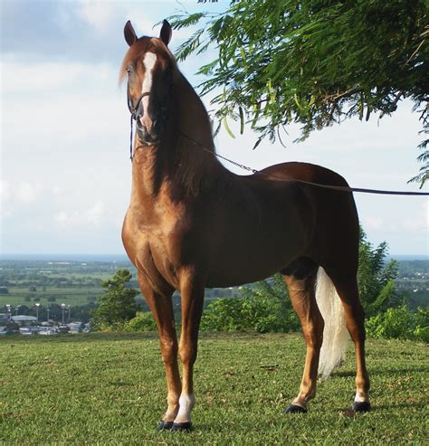

I am from task 1
I am from task 2 and 5
I am from task 3 and 10 h1
I am from task 3 h2
I am from task 3 h3
I am from task 3 h4
I am from task 3 h5
I am from task 3 h6
I am from task 4 and the image to the right is task 6

I am from task 7
I
am
from
the
8th
task
I am
from the
9th task